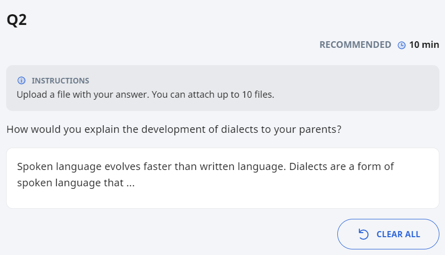

Free-Response Question
-
For Free-Response Questions, your response may include text, mathematical or chemical equations, emoticons, or drawing.
-
You will be able to see the recommended time and marks for this question if your teacher has set them.

Some Free-Response Questions may have a part of the answer or drawing in the text box. This is given by your teacher to help you in refining your answer response.
Some Free-Response Questions allow students to submit a file as an attachment. Click the Upload File icon
 . Click here to find out how you can upload files.
. Click here to find out how you can upload files.
Rubrics in Free-Response Response Questions
Some Free-Response Questions contain Rubrics for reference. Click here to find out more.
Submitting a Free-Response Question
-
In a standalone question that is not part of a quiz, you can submit your response by clicking the Submit button. You can also choose Save as Draft if you would like to revisit this question later on after you have visited other pages or logged out. Your responses will be saved.
-
In an Auto-Graded and a Teacher-Marked Quiz, you can submit after attempting the last question.